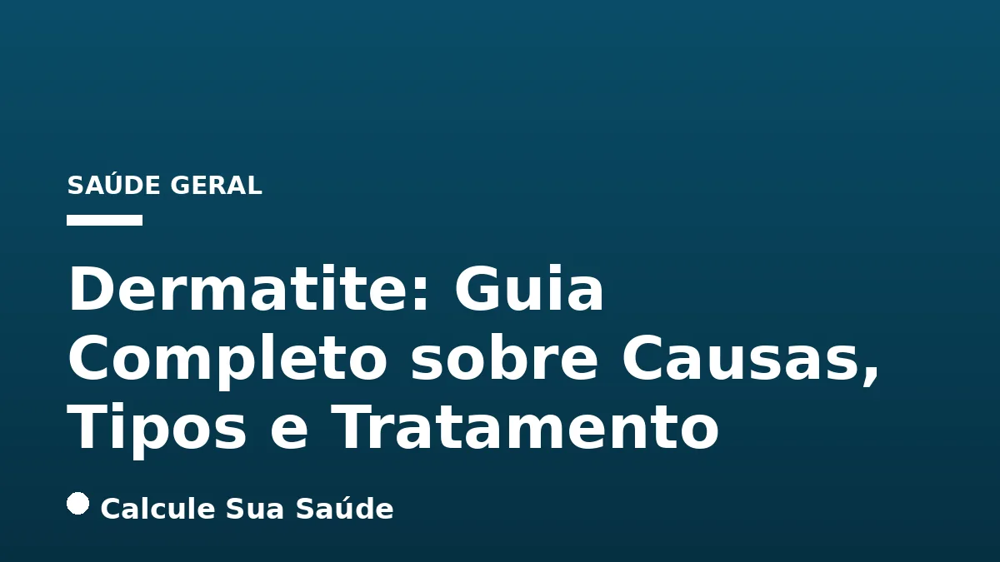

Aviso médico importante
Este conteúdo é educativo e informativo e não substitui a consulta, o diagnóstico ou o tratamento de um profissional de saúde. Em caso de sintomas, procure orientação médica.
Índice do Artigo
- 1. Definição e Abrangência da Dermatite
- 2. Tipos Principais de Dermatite e Suas Peculiaridades
- 3. Epidemiologia da Dermatite no Brasil e no Mundo
- 4. Mecanismos Fisiopatológicos e Causas da Dermatite
- 5. Sintomas Clínicos da Dermatite: Reconhecendo os Sinais
- 6. Diagnóstico Diferencial da Dermatite: A Abordagem Médica
- 7. Estratégias de Prevenção e Manejo Não Farmacológico
- 8. Tratamentos Farmacológicos Baseados em Evidências
- 9. Avanços na Pesquisa e Terapias Emergentes
- 10. Dermatite e Qualidade de Vida: Impacto Psicossocial
- 11. Mitos e Verdades sobre a Dermatite: Desmistificando Crenças
- 12. Quando Procurar Ajuda Médica Especializada
- 13. Conclusão: A Importância do Manejo Integrado da Dermatite
- 14. Perguntas frequentes
A dermatite, um termo abrangente que descreve a inflamação da pele, é uma condição dermatológica comum que afeta milhões de pessoas em todo o mundo e no Brasil. Caracterizada por sintomas como coceira, vermelhidão, ressecamento e, em alguns casos, bolhas e descamação, a dermatite pode impactar significativamente a qualidade de vida dos indivíduos, independentemente da idade ou da área do corpo afetada. Apesar de seu desconforto, é crucial ressaltar que a dermatite não é contagiosa, desmistificando uma das crenças mais difundidas sobre a condição.
Com uma etiologia multifatorial, a dermatite engloba diversos tipos, cada um com suas particularidades em termos de causas, manifestações clínicas e abordagens terapêuticas. Desde a dermatite atópica, frequentemente associada a outras condições alérgicas como a asma, até a dermatite de contato, desencadeada pela exposição a irritantes ou alérgenos, compreender as nuances de cada forma é fundamental para um diagnóstico preciso e um plano de tratamento eficaz.
Este artigo, elaborado com base em evidências científicas e diretrizes médicas atuais, visa fornecer um panorama aprofundado sobre a dermatite. Abordaremos sua definição, os principais tipos, fatores de risco, sintomas, métodos diagnósticos e as estratégias de prevenção e tratamento disponíveis, incluindo os avanços terapêuticos. Nosso objetivo é capacitar você com informações confiáveis para um melhor entendimento e manejo dessa condição complexa da pele, sempre reforçando a importância do acompanhamento médico especializado.
Em resumo
- Dermatite é uma inflamação da pele não contagiosa, que causa coceira, vermelhidão e ressecamento, podendo apresentar bolhas ou descamação.
- Existem vários tipos, como atópica (eczema), de contato, seborreica, perioral e herpetiforme, cada um com causas e características distintas.
- As causas são multifatoriais, envolvendo genética, reações imunológicas, fatores ambientais (poluentes, clima, alérgenos) e estresse.
- O diagnóstico é clínico, baseado na história do paciente e nas lesões, podendo exigir biópsia ou testes de contato em alguns casos.
- O tratamento visa aliviar sintomas e prevenir crises, utilizando hidratantes, corticosteroides tópicos, imunomoduladores e, em casos graves, imunossupressores ou imunobiológicos.
- A prevenção inclui hidratação diária, banhos adequados, uso de roupas macias e a identificação e evitação de agentes desencadeantes.
1. Definição e Abrangência da Dermatite
A dermatite é um termo genérico utilizado na medicina para descrever uma condição inflamatória da pele. Essa inflamação pode se manifestar de diversas formas e em diferentes intensidades, mas geralmente é caracterizada por uma resposta do sistema imunológico que resulta em alterações visíveis e sensações desconfortáveis na pele. É uma das queixas dermatológicas mais comuns, afetando indivíduos de todas as idades, desde recém-nascidos até idosos.
A pele, nosso maior órgão, atua como uma barreira protetora contra o ambiente externo. Quando essa barreira é comprometida ou quando há uma reação exagerada a estímulos internos ou externos, a inflamação se instala, dando origem à dermatite. Os sintomas mais frequentes incluem pele seca, coceira intensa (prurido) e irritação. Em quadros mais agudos ou graves, podem surgir erupções cutâneas, bolhas (vesículas), secreção (exsudato), crostas ou descamação. É fundamental compreender que, apesar do desconforto e da aparência, a dermatite não é uma condição contagiosa, o que significa que não pode ser transmitida de pessoa para pessoa por contato físico.
A complexidade da dermatite reside não apenas na variedade de suas manifestações, mas também na multiplicidade de fatores que podem desencadeá-la ou agravá-la. Desde predisposições genéticas até exposições ambientais e reações imunológicas específicas, a compreensão desses elementos é crucial para um manejo eficaz. A abordagem terapêutica, portanto, deve ser individualizada, considerando o tipo específico de dermatite, a gravidade dos sintomas e as particularidades de cada paciente.
2. Tipos Principais de Dermatite e Suas Peculiaridades
Embora o termo dermatite seja amplo, ele engloba diversas condições distintas, cada uma com suas características clínicas e etiológicas. Conhecer os tipos mais comuns é essencial para um diagnóstico e tratamento adequados.
Dermatite Atópica (Eczema)
A dermatite atópica, frequentemente referida como eczema, é uma condição inflamatória crônica da pele, caracterizada por pele seca, coceira intensa e inflamação. É particularmente comum em crianças, mas pode persistir ou se desenvolver na vida adulta. A dermatite atópica é parte da chamada 'marcha atópica', um padrão de desenvolvimento de condições alérgicas que inclui também asma e rinite alérgica. A predisposição genética desempenha um papel significativo, e a doença está associada a um desequilíbrio nos microrganismos da pele.
Dermatite de Contato
Este tipo de dermatite é uma erupção cutânea pruriginosa que surge após o contato direto da pele com uma substância irritante ou um alérgeno. Pode ser classificada em dois subtipos:
- Dermatite de Contato Irritante: Ocorre quando uma substância danifica diretamente a barreira protetora da pele, como detergentes, sabonetes agressivos, ácidos ou solventes.
- Dermatite de Contato Alérgica: É uma reação do sistema imunológico a uma substância específica (alérgeno), como níquel (presente em joias), látex, fragrâncias, cosméticos, plantas (como hera venenosa) ou certos medicamentos tópicos. A reação pode não ocorrer no primeiro contato, mas após sensibilização.
Dermatite Seborreica
A dermatite seborreica afeta principalmente áreas do corpo ricas em glândulas sebáceas, como o couro cabeludo, sobrancelhas, laterais do nariz, orelhas e tórax. Caracteriza-se por descamação (caspa no couro cabeludo), manchas avermelhadas e coceira. Acredita-se que a proliferação de um fungo leveduriforme, Malassezia, que vive naturalmente na pele, desempenhe um papel importante no seu desenvolvimento, especialmente em indivíduos predispostos.
Dermatite Perioral
Esta condição se manifesta com pequenas lesões avermelhadas e, por vezes, pápulas ou pústulas, que surgem predominantemente ao redor da boca, nas laterais do nariz e perto do queixo. É mais comum em mulheres jovens e pode ser desencadeada ou agravada pelo uso de corticosteroides tópicos potentes na face, cosméticos oclusivos ou pastas de dente com flúor.
Dermatite Herpetiforme
A dermatite herpetiforme é uma condição crônica e autoimune da pele, fortemente associada à doença celíaca e à sensibilidade ao glúten. Caracteriza-se por bolhas pequenas e extremamente pruriginosas, que geralmente aparecem em grupos (daí o nome 'herpetiforme', que lembra herpes) nos cotovelos, joelhos, nádegas e couro cabeludo. O tratamento envolve uma dieta rigorosa sem glúten e, em alguns casos, medicamentos específicos para controlar a coceira e as lesões.
A tabela a seguir resume as principais características dos tipos de dermatite abordados:
| Tipo de Dermatite | Características Principais | Localização Comum | Causas/Fatores Associados |
|---|---|---|---|
| Atópica (Eczema) | Pele seca, coceira intensa, inflamação crônica | Dobras de cotovelos e joelhos, face, pescoço | Genética, disfunção da barreira cutânea, alergias alimentares |
| De Contato | Erupção pruriginosa, vermelhidão, bolhas | Área de contato com a substância | Irritantes (detergentes), alérgenos (níquel, fragrâncias) |
| Seborreica | Descamação oleosa, manchas avermelhadas, coceira | Couro cabeludo, sobrancelhas, nariz, orelhas, tórax | Proliferação de Malassezia, glândulas sebáceas ativas |
| Perioral | Pequenas pápulas/pústulas avermelhadas | Ao redor da boca, nariz, queixo | Corticosteroides tópicos, cosméticos, flúor |
| Herpetiforme | Bolhas muito pruriginosas, em grupos | Cotovelos, joelhos, nádegas, couro cabeludo | Doença celíaca, sensibilidade ao glúten |
3. Epidemiologia da Dermatite no Brasil e no Mundo
A dermatite representa um desafio significativo para a saúde pública global, dada a sua alta prevalência e o impacto na qualidade de vida dos afetados. No Brasil, os dados epidemiológicos reforçam a magnitude dessa condição.
A Sociedade Brasileira de Dermatologia (SBD) estima que cerca de 40% da população brasileira apresente algum tipo de problema de pele, e as diversas formas de dermatite estão entre as mais comuns. Essa estatística sublinha a ampla ocorrência da condição em nosso país.
Especificamente, a dermatite atópica, uma das formas mais prevalentes, afeta uma parcela considerável da população. Segundo a SBD, ela atinge aproximadamente 7% dos adultos e entre 15% e 25% da população infantil no Brasil. A Associação Brasileira de Alergia e Imunologia (ASBAI) corrobora esses dados, indicando que mais de 20% das crianças brasileiras têm dermatite, sendo que 5% delas manifestam a forma mais grave da doença. Em adultos, a prevalência é de cerca de 3%.
A prevalência média de eczema flexural, uma manifestação comum da dermatite atópica, no Brasil foi de 6,8% para escolares e 4,7% para adolescentes, evidenciando a persistência da doença em diferentes faixas etárias durante a infância e adolescência.
Em uma perspectiva global, a dermatite atópica afeta entre 10% e 15% da população mundial. A prevalência mundial é de 7,9% entre crianças de 6 e 7 anos e de 7,3% entre adolescentes de 13 e 14 anos. Em adultos, a prevalência varia de 1% a 3%. É notável que cerca de 60% dos pacientes desenvolvem a doença no primeiro ano de vida e 90% antes dos 5 anos de idade, o que destaca a importância do diagnóstico precoce e do manejo adequado desde a infância para mitigar o curso da doença.
4. Mecanismos Fisiopatológicos e Causas da Dermatite
A dermatite é uma condição de etiologia complexa, resultado da interação entre fatores genéticos, imunológicos e ambientais. A compreensão desses mecanismos é fundamental para o desenvolvimento de estratégias preventivas e terapêuticas eficazes.
Fatores Genéticos e Imunológicos
A predisposição genética é um dos pilares na patogênese de muitos tipos de dermatite, especialmente a atópica. Indivíduos com histórico familiar de dermatite, asma ou rinite alérgica (condições atópicas) possuem maior probabilidade de desenvolver a doença. Por exemplo, uma criança com um dos pais atópicos tem aproximadamente 25% de chance de desenvolver dermatite atópica; se ambos os pais forem atópicos, essa chance pode superar 50%.
No nível molecular, a dermatite atópica está frequentemente associada a mutações no gene da filagrina, uma proteína essencial para a integridade da barreira cutânea. A disfunção dessa barreira torna a pele mais permeável, facilitando a entrada de irritantes e alérgenos e a perda de água, o que leva à secura e inflamação características. Além disso, o sistema imunológico de pacientes com dermatite atópica tende a ter uma resposta Th2 (T helper 2) exacerbada, produzindo citocinas pró-inflamatórias que perpetuam o ciclo de inflamação e coceira. Há também um desequilíbrio na microbiota da pele, com uma maior colonização por Staphylococcus aureus, que pode agravar a inflamação.
Na dermatite de contato alérgica, o sistema imunológico reage de forma específica a um alérgeno, desencadeando uma resposta inflamatória mediada por células T. Já na dermatite de contato irritante, o dano à pele é mais direto, sem a necessidade de uma resposta imunológica específica, mas ainda assim envolvendo uma cascata inflamatória.
Fatores Ambientais e Desencadeantes
O ambiente desempenha um papel crucial no desencadeamento e agravamento dos sintomas da dermatite. A exposição a poluentes, como fumaça de cigarro e produtos químicos industriais, pode danificar a barreira cutânea e induzir inflamação. Condições climáticas extremas, como frio ou calor excessivo, e baixa umidade do ar, contribuem para o ressecamento da pele e a exacerbação da dermatite.
Alérgenos comuns no ambiente, como poeira, ácaros, pólen e pelos de animais, são gatilhos frequentes para a dermatite atópica. O suor intenso também pode irritar a pele e piorar a coceira. Além disso, o contato com substâncias irritantes ou alérgenas presentes em cosméticos, fragrâncias, joias (níquel), plantas, detergentes, sabonetes agressivos e tecidos ásperos pode desencadear ou agravar a dermatite de contato.
Estresse e Fatores Emocionais
Embora a dermatite seja uma doença com base biológica, fatores emocionais como estresse e ansiedade podem ter um impacto significativo na sua manifestação e gravidade. O estresse crônico pode modular a resposta imunológica e a função da barreira cutânea, exacerbando os sintomas de coceira e inflamação. Em muitos pacientes, períodos de maior estresse emocional são acompanhados por crises mais intensas da doença, criando um ciclo vicioso onde a coceira e o desconforto da pele aumentam o estresse, que por sua vez piora a dermatite. É importante reconhecer essa conexão e considerar estratégias de manejo do estresse como parte do plano terapêutico geral, especialmente para pacientes com transtornos de ansiedade.
5. Sintomas Clínicos da Dermatite: Reconhecendo os Sinais
Os sintomas da dermatite são variados e dependem do tipo específico e da gravidade da condição. No entanto, alguns sinais são comuns e característicos da inflamação cutânea. A identificação precoce desses sintomas é crucial para buscar o diagnóstico e tratamento adequados.
- Coceira Intensa (Prurido): É o sintoma mais proeminente e frequentemente o mais incômodo. A coceira pode ser persistente e tão severa que interfere no sono, na concentração e nas atividades diárias, impactando significativamente a qualidade de vida.
- Vermelhidão (Eritema): A pele afetada geralmente apresenta áreas avermelhadas, que indicam inflamação. A intensidade da vermelhidão pode variar de um leve rubor a um eritema intenso.
- Pele Seca e Ressecamento: A disfunção da barreira cutânea leva à perda de umidade, resultando em pele áspera, escamosa e com sensação de repuxamento.
- Descamação da Pele: A renovação celular acelerada e a perda de coesão entre as células da camada mais externa da pele resultam em descamação, que pode variar de fina e esbranquiçada (como na caspa) a flocos maiores.
- Inflamação: Além da vermelhidão, a inflamação pode se manifestar como inchaço (edema) e sensibilidade ao toque na área afetada.
- Bolhas, Secreção e Crostas: Em casos mais agudos ou de maior gravidade, especialmente na dermatite de contato ou atópica exacerbada, podem surgir pequenas bolhas (vesículas) que, ao se romperem, liberam líquido (exsudato) e formam crostas.
- Rachaduras e Afinamento da Pele: O ressecamento extremo e a inflamação crônica podem levar ao surgimento de rachaduras dolorosas, especialmente em áreas de movimento, como dobras e articulações. Em casos de uso prolongado de corticosteroides tópicos, pode ocorrer afinamento da pele.
- Espessamento da Pele (Liquenificação): A coceira e o atrito constantes, resultantes do ato de coçar repetidamente, podem levar ao espessamento e endurecimento da pele, tornando-a com aspecto mais rugoso e com linhas mais marcadas.
Em crianças, a coceira intensa pode levar a dificuldades para dormir, irritabilidade, ansiedade e prejuízo ao desempenho escolar. O impacto psicossocial da dermatite não deve ser subestimado, pois as lesões visíveis podem gerar constrangimento e afetar a autoestima.
6. Diagnóstico Diferencial da Dermatite: A Abordagem Médica
O diagnóstico da dermatite é predominantemente clínico e requer uma avaliação cuidadosa por um profissional de saúde, preferencialmente um dermatologista. O processo diagnóstico envolve uma combinação de anamnese detalhada, exame físico das lesões cutâneas e, em alguns casos, exames complementares para confirmar o tipo específico de dermatite ou excluir outras condições.
A história do paciente é um componente crucial. O médico investigará o início dos sintomas, a frequência e a intensidade das crises, fatores que parecem agravar ou aliviar a condição, histórico familiar de alergias ou doenças de pele, uso de medicamentos, exposição a substâncias químicas ou alérgenos, e o impacto da dermatite na vida diária. Informações sobre a rotina de higiene, cosméticos utilizados e hábitos alimentares também podem ser relevantes.
O exame físico foca na morfologia (aparência) e distribuição das lesões cutâneas. A localização das erupções, o tipo de lesão (vermelhidão, descamação, bolhas, crostas, liquenificação) e a presença de sinais de coceira (escoriações) fornecem pistas importantes para diferenciar os tipos de dermatite. Por exemplo, a dermatite atópica classicamente afeta as dobras dos cotovelos e joelhos, enquanto a dermatite seborreica se concentra em áreas oleosas.
Em situações onde o diagnóstico clínico não é conclusivo ou para excluir outras condições de pele que podem mimetizar a dermatite, exames adicionais podem ser necessários:
- Biópsia de Pele: Consiste na remoção de uma pequena amostra da pele afetada para análise histológica em laboratório. A biópsia pode ajudar a confirmar o diagnóstico, identificar características específicas da inflamação e diferenciar a dermatite de outras doenças cutâneas, como psoríase ou infecções fúngicas.
- Testes de Contato (Patch Tests): São fundamentais para o diagnóstico da dermatite de contato alérgica. Pequenas quantidades de substâncias suspeitas (alérgenos) são aplicadas em adesivos na pele do dorso do paciente e removidas após 48 horas. A pele é então avaliada para reações (vermelhidão, inchaço, bolhas) em 48 e 96 horas, indicando sensibilidade a um alérgeno específico.
- Testes de Alergia (Prick Test, IgE específica): Embora menos diretos para o diagnóstico da dermatite em si, podem ser úteis em casos de dermatite atópica para identificar possíveis alérgenos ambientais ou alimentares que possam estar contribuindo para as crises, especialmente em crianças.
É essencial que o diagnóstico seja feito por um profissional de saúde qualificado, pois o tratamento inadequado pode não apenas ser ineficaz, mas também agravar a condição ou levar a complicações.
7. Estratégias de Prevenção e Manejo Não Farmacológico
A prevenção e o controle da dermatite são pilares fundamentais no manejo da condição, complementando o tratamento medicamentoso e visando reduzir a frequência e a intensidade das crises. Uma rotina de cuidados com a pele e a identificação e evitação de fatores desencadeantes são essenciais.
Rotina de Hidratação e Cuidados com a Pele
A hidratação diária é crucial para fortalecer a barreira cutânea, que frequentemente está comprometida em pacientes com dermatite. O uso regular de hidratantes emolientes ajuda a restaurar a função de barreira da pele, reduzir a perda de água e diminuir a secura e a coceira. É recomendado aplicar o hidratante no máximo 3 minutos após o banho, enquanto a pele ainda está úmida, para 'selar' a umidade e maximizar sua eficácia. Produtos sem fragrância e hipoalergênicos são preferíveis.
Banhos Adequados e Higiene Suave
Contrariando o mito de que pessoas com dermatite devem evitar banhos, a higiene adequada é parte fundamental do tratamento. No entanto, é importante adotar práticas que minimizem a irritação da pele:
- Banhos Rápidos e com Água Morna: Banhos muito quentes e demorados podem remover os óleos naturais da pele, agravando o ressecamento.
- Sabonetes Suaves ou Produtos de Higiene sem Sabão: Evitar sabonetes agressivos, antibacterianos ou com fragrâncias fortes. Optar por produtos syndet (detergentes sintéticos) ou óleos de banho que limpam sem ressecar.
- Secagem Suave: Após o banho, secar a pele delicadamente com uma toalha macia, sem esfregar, apenas pressionando para absorver o excesso de água.
Escolha de Roupas e Controle Ambiental
A escolha das roupas pode influenciar diretamente a irritação da pele. Recomenda-se usar roupas de algodão ou tecidos macios e respiráveis, evitando fibras ásperas como lã e tecidos sintéticos que podem causar atrito e superaquecimento. Roupas apertadas também devem ser evitadas, pois podem aumentar a transpiração e a irritação.
O controle ambiental é outro aspecto importante. Manter ambientes climatizados quando possível, usar ventiladores para circulação do ar e evitar atividades físicas intensas em horários quentes pode reduzir o suor, um conhecido gatilho para a coceira. Em ambientes muito secos, um umidificador pode ser útil, enquanto em locais úmidos, um desumidificador pode ajudar a controlar a proliferação de ácaros e fungos. Para a saúde da pele em geral, a proteção solar também é crucial.
Identificação e Evitação de Agentes Desencadeantes
Um passo crucial na prevenção é identificar e, sempre que possível, evitar os agentes que desencadeiam ou agravam a dermatite. Isso pode incluir:
- Alérgenos e Irritantes: Produtos químicos de limpeza, fumaça de cigarro, poeira, ácaros, pelos de animais, certos alimentos (em casos de alergia alimentar associada à dermatite atópica).
- Cosméticos e Produtos de Higiene Pessoal: Fragrâncias, corantes e conservantes em sabonetes, loções, maquiagens e xampus.
- Metais: Níquel, presente em joias, fivelas e botões.
- Plantas: Hera venenosa, carvalho venenoso.
Manter um diário de sintomas pode ajudar a identificar padrões e correlacionar as crises com a exposição a determinados fatores. A colaboração com o médico é fundamental para elaborar um plano de manejo personalizado.
8. Tratamentos Farmacológicos Baseados em Evidências
O tratamento da dermatite é individualizado e depende do tipo, da gravidade e da resposta do paciente. O objetivo principal é aliviar os sintomas, controlar a inflamação e prevenir novas crises. As abordagens terapêuticas são baseadas em evidências científicas e devem ser sempre orientadas por um dermatologista.
Corticosteroides Tópicos e Orais
Os corticosteroides tópicos são frequentemente a primeira linha de tratamento para a maioria das dermatites, devido à sua potente ação anti-inflamatória e antipruriginosa. Disponíveis em diferentes potências (baixa, média, alta), são aplicados diretamente nas áreas afetadas para reduzir a vermelhidão, inchaço e coceira. São seguros e eficazes quando usados corretamente e sob orientação médica, evitando o uso prolongado de potências elevadas em áreas sensíveis como o rosto. O uso indevido pode levar a efeitos adversos como afinamento da pele, estrias e telangiectasias.
Os corticosteroides orais são reservados para casos graves e agudos de dermatite, onde a inflamação é disseminada ou os sintomas são intensos e refratários ao tratamento tópico. Seu uso é geralmente por um período curto para controlar a crise, devido aos potenciais efeitos adversos sistêmicos, como aumento da pressão arterial, alterações glicêmicas, osteoporose e supressão adrenal.
Imunomoduladores Tópicos e Orais
Os imunomoduladores tópicos, como o tacrolimo (pomada) e o pimecrolimo (creme), são uma alternativa eficaz aos corticosteroides, especialmente para uso em áreas sensíveis como o rosto e pálpebras, ou para tratamento de manutenção. Eles atuam modulando a resposta imunológica local, reduzindo a inflamação sem os riscos de afinamento da pele associados aos corticosteroides. O Ministério da Saúde do Brasil, por meio de seu Protocolo Clínico e Diretrizes Terapêuticas (PCDT) para dermatite atópica, incorporou o tacrolimo tópico no SUS, ampliando o acesso a essa opção terapêutica.
Para casos moderados a graves de dermatite, especialmente a atópica, que não respondem aos tratamentos tópicos, podem ser indicados imunossupressores orais, como o metotrexato e a ciclosporina. Esses medicamentos atuam suprimindo a resposta imunológica sistêmica para controlar a inflamação. Seu uso requer monitoramento rigoroso devido aos potenciais efeitos adversos, incluindo toxicidade hepática e renal, e aumento do risco de infecções. O metotrexato também foi incorporado ao SUS para o tratamento da dermatite atópica grave.
Anti-histamínicos e Outras Terapias
Os anti-histamínicos orais podem ser utilizados para aliviar a coceira, especialmente aqueles com efeito sedativo, que podem ajudar a melhorar o sono em pacientes com prurido noturno intenso. No entanto, eles não tratam a inflamação subjacente da dermatite.
Outras terapias incluem antibióticos orais ou tópicos para tratar infecções bacterianas secundárias que podem complicar as lesões de dermatite, e antifúngicos para a dermatite seborreica.
Fototerapia e Imunobiológicos
A fototerapia, que utiliza a exposição controlada à luz ultravioleta (UVA ou UVB), pode ser uma opção de tratamento para dermatites crônicas e extensas, como a dermatite atópica. A luz UV tem propriedades imunossupressoras e anti-inflamatórias na pele.
Em casos graves e refratários de dermatite atópica, as terapias com imunobiológicos representam um avanço significativo. Medicamentos como o dupilumabe, um anticorpo monoclonal que bloqueia citocinas envolvidas na inflamação tipo 2, têm demonstrado alta eficácia na redução da gravidade da doença e na melhoria da qualidade de vida dos pacientes. Esses tratamentos são geralmente administrados por injeção e são indicados para pacientes que não respondem às terapias convencionais.
9. Avanços na Pesquisa e Terapias Emergentes
A pesquisa científica na área da dermatologia continua a avançar, trazendo novas perspectivas e opções terapêuticas para a dermatite, especialmente a atópica, que é uma das condições mais estudadas. Esses avanços buscam entender melhor os mecanismos da doença e desenvolver tratamentos mais eficazes e com menos efeitos adversos.
Uma área promissora de pesquisa envolve a modulação do microbioma da pele. Estudos, incluindo aqueles realizados pelo NIH (National Institutes of Health), têm explorado o potencial de terapias baseadas em bactérias. Por exemplo, o tratamento tópico com a bactéria Roseomonas mucosa, naturalmente presente na pele, foi associado à redução da gravidade da dermatite atópica em estudos iniciais. Essa abordagem visa restaurar o equilíbrio da microbiota cutânea, que se mostra alterado em pacientes com dermatite atópica, contribuindo para a inflamação.
Além dos imunobiológicos já aprovados, novas moléculas estão em desenvolvimento, incluindo inibidores de JAK (Janus Kinase), que atuam bloqueando vias de sinalização inflamatórias dentro das células. Esses medicamentos, administrados oralmente, têm mostrado resultados promissores em ensaios clínicos para dermatite atópica moderada a grave, oferecendo uma nova classe de tratamento direcionado.
A compreensão aprofundada dos mecanismos genéticos e imunológicos da dermatite também está impulsionando o desenvolvimento de terapias mais personalizadas. A medicina de precisão busca identificar biomarcadores que possam prever a resposta de um paciente a um determinado tratamento, permitindo uma abordagem mais eficaz e individualizada. Essas inovações representam uma esperança significativa para pacientes que vivem com as formas mais desafiadoras da dermatite.
10. Dermatite e Qualidade de Vida: Impacto Psicossocial
A dermatite, especialmente em suas formas crônicas e visíveis, vai muito além de uma condição física; ela exerce um impacto profundo na qualidade de vida e no bem-estar psicossocial dos indivíduos. A coceira persistente, a dor, o ressecamento e as lesões cutâneas podem gerar uma série de desafios emocionais e sociais.
A coceira intensa, um sintoma cardinal da dermatite, pode levar a distúrbios do sono, resultando em fadiga diurna, irritabilidade e dificuldade de concentração. Em crianças, isso pode afetar o desempenho escolar e o desenvolvimento social. O ciclo vicioso de coceira e arranhadura pode levar a infecções secundárias, cicatrizes e liquenificação, agravando ainda mais o desconforto.
As manifestações visíveis da dermatite, como vermelhidão, descamação e lesões, podem causar constrangimento e afetar a autoestima. Muitos pacientes relatam sentimentos de vergonha, ansiedade e depressão, especialmente em ambientes sociais ou profissionais. O medo do julgamento alheio e a percepção de que a condição é contagiosa (um mito comum) podem levar ao isolamento social e à evitação de atividades que antes eram prazerosas, como esportes aquáticos ou eventos sociais.
O estresse, como mencionado anteriormente, pode ser um gatilho e um agravante para as crises de dermatite, criando um ciclo difícil de quebrar. A gestão do estresse, por meio de técnicas de relaxamento, terapia psicológica ou outras abordagens, pode ser um componente importante no plano de tratamento integral da dermatite, reconhecendo a interconexão entre a saúde da pele e a saúde mental. O apoio de grupos de pacientes e a educação sobre a condição também são valiosos para ajudar os indivíduos a lidar com os desafios psicossociais da dermatite.
11. Mitos e Verdades sobre a Dermatite: Desmistificando Crenças
A dermatite é cercada por muitos mitos e equívocos que podem levar a práticas inadequadas e agravar a condição. É fundamental desmistificar essas crenças com base em evidências científicas para garantir um manejo correto e eficaz.
MITO: Dermatite é contagiosa.
VERDADE: A dermatite não é contagiosa. É uma condição inflamatória da pele que não pode ser transmitida por contato físico, abraços ou compartilhamento de objetos. O receio de contágio é um dos mitos mais prejudiciais, pois pode levar ao isolamento social dos pacientes.
MITO: É causada por falta de higiene.
VERDADE: A dermatite é uma condição complexa, muitas vezes com base genética e imunológica, e não está relacionada à falta de higiene pessoal. Na verdade, o uso excessivo de sabonetes agressivos e banhos muito quentes pode até mesmo agravar alguns tipos de dermatite, ao comprometer a barreira cutânea.
MITO: Só afeta crianças.
VERDADE: Embora a dermatite atópica seja mais comum na infância, podendo se manifestar já no primeiro ano de vida, ela pode persistir na vida adulta ou até mesmo começar na idade adulta. Outros tipos de dermatite, como a de contato, podem surgir em qualquer fase da vida.
MITO: Vai passar sozinho.
VERDADE: Embora a dermatite atópica possa melhorar com a idade em algumas crianças, a condição é crônica e requer tratamento adequado para o controle dos sintomas e para evitar complicações. Sem tratamento, as crises podem ser mais frequentes e severas, e a pele pode sofrer danos a longo prazo.
MITO: É apenas estresse ou psicológico.
VERDADE: A dermatite é uma doença real da pele com bases biológicas e fisiopatológicas bem estabelecidas. Embora o estresse e a ansiedade possam agravar os sintomas e desencadear crises, eles não são a causa primária da doença. A abordagem deve ser tanto dermatológica quanto, se necessário, psicoterapêutica para o manejo do estresse.
MITO: Pessoas com dermatite devem tomar o mínimo de banho possível.
VERDADE: Banhos são parte fundamental do tratamento, desde que sejam rápidos, com água morna e sabonetes suaves ou produtos de higiene sem sabão. O banho ajuda a limpar a pele, remover crostas e preparar a pele para a hidratação imediata, que é crucial para restaurar a barreira cutânea.
MITO: Pacientes com dermatite atópica não podem tomar leite ou comer ovo.
VERDADE: Depende. A maioria dos pacientes com dermatite atópica não apresenta alergia alimentar associada. No entanto, alergias alimentares são mais comuns em atópicos, especialmente em crianças pequenas com formas graves da doença. A restrição alimentar só deve ser feita sob orientação médica e após testes diagnósticos que comprovem a alergia.
MITO: O ar-condicionado não afeta a dermatite.
VERDADE: Parcialmente verdade. O ar-condicionado pode contribuir para a secura do ambiente e, consequentemente, da pele, o que pode piorar o quadro de dermatite atópica. É importante redobrar a atenção com a hidratação em ambientes climatizados e considerar o uso de umidificadores de ar.
12. Quando Procurar Ajuda Médica Especializada
Embora muitas formas de dermatite possam ser gerenciadas com cuidados básicos e tratamentos tópicos, é fundamental saber quando procurar a avaliação de um profissional de saúde. A intervenção médica precoce pode prevenir o agravamento dos sintomas, evitar complicações e melhorar significativamente a qualidade de vida.
Você deve procurar um dermatologista ou médico de família nas seguintes situações:
- Sintomas Persistentes ou Piorando: Se a coceira, vermelhidão ou outras lesões não melhorarem com os cuidados caseiros ou se estiverem se agravando, mesmo com o uso de produtos sem receita.
- Coceira Intensa que Interfere na Vida Diária: Se a coceira for tão severa que impede o sono, afeta o trabalho ou a escola, ou causa angústia significativa.
- Sinais de Infecção: Se as lesões apresentarem sinais de infecção bacteriana, como pus, crostas amareladas, inchaço excessivo, dor intensa ou febre.
- Dermatite em Áreas Sensíveis: Se a dermatite afetar áreas como o rosto, pálpebras, genitais ou grandes extensões do corpo.
- Dermatite de Contato Recorrente: Se você suspeita de dermatite de contato e não consegue identificar ou evitar o agente causador, ou se as crises são frequentes.
- Impacto na Qualidade de Vida: Se a condição está causando estresse emocional, ansiedade, depressão ou isolamento social.
- Dúvidas sobre o Diagnóstico ou Tratamento: Se você não tem certeza sobre o tipo de dermatite ou qual o melhor plano de tratamento.
Um dermatologista poderá realizar um diagnóstico preciso, identificar o tipo específico de dermatite, investigar possíveis gatilhos e prescrever o tratamento mais adequado, que pode incluir medicamentos tópicos, orais, fototerapia ou terapias mais avançadas. Lembre-se que este conteúdo é educativo e não substitui a consulta e avaliação de um profissional de saúde.
13. Conclusão: A Importância do Manejo Integrado da Dermatite
A dermatite é uma condição inflamatória da pele que, em suas diversas manifestações, afeta uma parcela significativa da população brasileira e mundial. Longe de ser uma simples irritação, ela representa um desafio complexo que exige uma abordagem multifacetada, considerando seus aspectos genéticos, imunológicos, ambientais e psicossociais.
A compreensão dos diferentes tipos de dermatite – atópica, de contato, seborreica, perioral e herpetiforme – é o primeiro passo para um diagnóstico preciso e um plano de tratamento eficaz. É crucial desmistificar crenças populares, como a ideia de que a dermatite é contagiosa ou causada por falta de higiene, para combater o estigma e promover o cuidado adequado.
O manejo bem-sucedido da dermatite baseia-se em uma combinação de estratégias preventivas e terapêuticas. A hidratação diária, banhos adequados, escolha de roupas apropriadas e a identificação e evitação de agentes desencadeantes são pilares fundamentais no controle da condição. Complementarmente, os tratamentos farmacológicos, que incluem corticosteroides, imunomoduladores, anti-histamínicos e, em casos mais graves, imunossupressores e imunobiológicos, oferecem alívio dos sintomas e controle da inflamação, sempre sob a supervisão de um dermatologista.
A pesquisa contínua e os avanços em terapias emergentes, como a modulação do microbioma cutâneo e os inibidores de JAK, trazem esperança para pacientes com formas mais refratárias da doença. No entanto, é imperativo reforçar que este artigo tem caráter exclusivamente informativo e educativo. A automedicação é contraindicada e a avaliação de um profissional de saúde é indispensável para o diagnóstico correto e a definição do tratamento mais seguro e eficaz para cada caso. Cuidar da pele é cuidar da saúde integral.
14. Perguntas frequentes
O que é dermatite?
Dermatite é um termo geral para a inflamação da pele, que pode causar coceira, vermelhidão, ressecamento, descamação e, por vezes, bolhas. Não é uma condição contagiosa e pode afetar pessoas de todas as idades.
Quais são os principais tipos de dermatite?
Os principais tipos incluem dermatite atópica (eczema), dermatite de contato (irritante ou alérgica), dermatite seborreica, dermatite perioral e dermatite herpetiforme. Cada tipo tem causas e características específicas.
A dermatite tem cura?
A dermatite é uma condição crônica para muitos, especialmente a atópica, mas seus sintomas podem ser controlados eficazmente com tratamento adequado. Embora não haja uma 'cura' definitiva em muitos casos, é possível viver sem crises frequentes e com boa qualidade de vida.
Como a dermatite é diagnosticada?
O diagnóstico é principalmente clínico, baseado na história do paciente e no exame das lesões cutâneas. Em alguns casos, podem ser necessários exames complementares como biópsia de pele ou testes de contato (patch tests) para identificar a causa ou tipo específico.
Quais são os tratamentos mais comuns para dermatite?
Os tratamentos variam conforme o tipo e gravidade, mas frequentemente incluem hidratantes (emolientes), corticosteroides tópicos, imunomoduladores tópicos, anti-histamínicos para a coceira e, em casos mais graves, corticosteroides orais, imunossupressores ou imunobiológicos.
É possível prevenir as crises de dermatite?
Sim, a prevenção envolve uma rotina de hidratação diária, banhos rápidos com água morna e sabonetes suaves, uso de roupas de algodão, controle ambiental e, crucialmente, a identificação e evitação de agentes irritantes ou alérgenos que desencadeiam as crises.
O estresse pode piorar a dermatite?
Sim, embora a dermatite tenha uma base biológica, o estresse e a ansiedade são fatores que podem agravar os sintomas e desencadear crises. O manejo do estresse pode ser uma parte importante do plano de tratamento.
Dermatite atópica está ligada a alergias alimentares?
A maioria dos pacientes com dermatite atópica não tem alergia alimentar associada. No entanto, alergias alimentares são mais comuns em atópicos, especialmente em crianças pequenas com formas graves. Restrições alimentares devem ser feitas apenas sob orientação médica e após testes específicos.
Leia também
Referências e Fontes
1. Mayo Clinic. Dermatitis - Symptoms and causes. Disponível em: mayoclinic.org
2. Rede D'Or. Dermatite: o que é, tipos, causas, sintomas e como tratar. Disponível em: rededorsaoluiz.com.br
3. Mayo Clinic. Atopic dermatitis (eczema) - Symptoms and causes. Disponível em: mayoclinic.org
4. Mayo Clinic. Contact dermatitis - Symptoms and causes. Disponível em: mayoclinic.org
5. Vuelo Pharma. Mitos e Verdades sobre Dermatite Atópica. Disponível em: vuelopharma.com
6. Rede D'Or. Dermatite: O que é, sintomas, tratamentos e causas. Disponível em: rededorsaoluiz.com.br
7. Blog Nav Dasa. Dermatite: o que é, sintomas, tipos e tratamento. Disponível em: blog.navdasa.com.br
8. Blog Farmácias Nissei. Dermatite: o que é, quais tipos, sintomas e como tratar! Disponível em: farmaciasnissei.com.br
9. NIH. Treatment with Roseomonas mucosa for Atopic Dermatitis. Disponível em: nih.gov
10. Ministério da Saúde do Brasil. Protocolo Clínico e Diretrizes Terapêuticas (PCDT) para Dermatite Atópica. Disponível em: gov.br